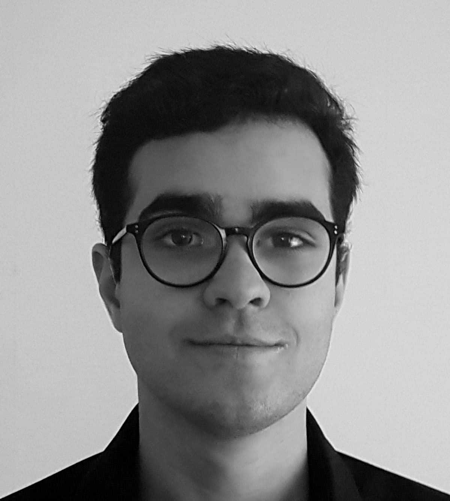
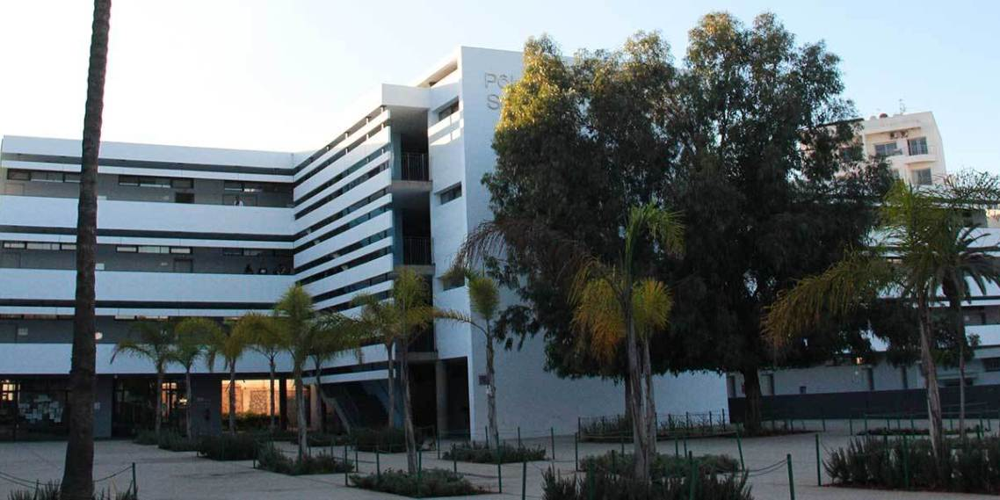
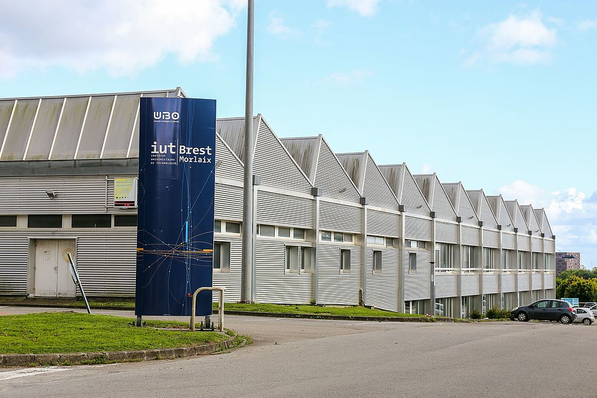
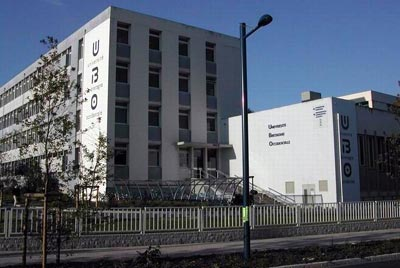
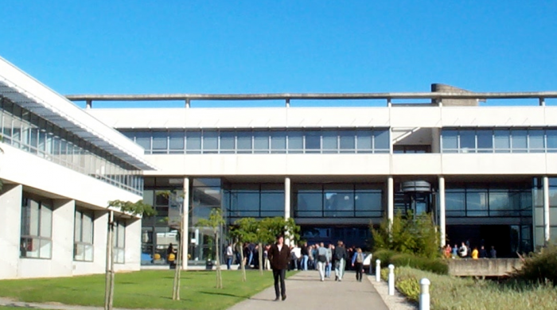
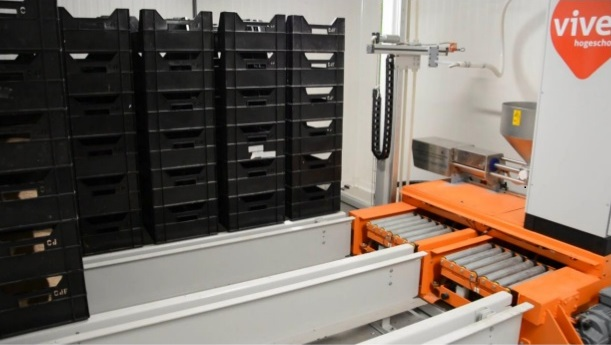

Dalil HAMED
Etudiant en cybersécurité à l'ISTIC de l'université de Rennes 1.

Mes formations
2016: Baccalaureat Scientifique SVT (Science et Vie de la Terre) avec la spécialité ISN (Informatique et Science du Numérique) au Lycée Lyautey de Casablanca (Lycée français de l'AEFE)
2016 - 2018: DUT GEII (Génie Electrique et Informatique Industrielle) parcours CC (Contrôle Commande) à l'IUT de Brest
2018 - 2019: Licence d'informatique parcours CDA (Conception et Développement d'Application) à l'université de Brest (UBO)
2019 - 2021 (En cours): Master cybersécurité à l'ISTIC de l'université de Rennes 1. M1 Sécurité, systèmes et réseaux
Expériences professionelle
Stage de 8 semaines (2019): Département informatique de Dassault Systèmes à Plouzané. Développement avec eclipse d'un plugin en java pour jenkins, un outils d'intégration continu. Ce plugin doit permettre de lié le logiciel de PLM Reqtify développé par Dassault Systèmes avec Jenkins

Stage de 10 semaines (2018): Université VIVES de Kortrijk (Belgique). Programmation d'un automate Siemens sur Tia Portal pour automatiser la culture de vers de farine
Compétences
Anglais :
C :
JAVA :
Python :
Autres langages et technologies: C++, SQL, HTML + CSS, SCM (git et subversion)
Programmation système : Assembleur x86, noyau linux
Programmation réseau : Suite des protocoles internet (TCP, UDP, FTP, SMTP ...), configuration de switch et routeur cisco
Cybersécurité : 1020 points root-me (sous le pseudonyme Kiproko), analyse de malware (avec Ghidra, IDA, DIE), rédaction de règles yara, reverse engineering avec GDB + peda.
Electronique : Maitrise des composants électroniques et des outils de télécommunication
Centres d'intérêts
Cinéma : option cinéma audio visuel (CAV) de la seconde à la terminal. Maitrise du matériel de réalisation et des logiciels de montage. Création de plusieurs courts métrages. Analyse de Longs métrages.
Graphisme : Divers projet à l'aide des logiciels adobe photoshop et adobe illustrator tel que des affiches pour des concerts et évènements étudiant
Sport : Déplacement quotidien à vélo
Associatif : Secretaire de l'association ElectroDUT (association des étudiants en IUT GEII à Brest) pour l'année 2017/2018.
Contact
-
Email
dalilhamed98@gmail.com -
Téléphone
+33 7 70 29 50 56 -
Réseaux sociaux
© Untitled. All rights reserved. Design: HTML5 UP.